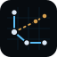

Logics — logo options
Five new directions, each with a 64×64 mark and a 190×48 wordmark.
Drop-in compatible with the existing logics-mark.svg and
logics-wordmark.svg in /public/site.


Hex Cargo
A hex container — the universal cargo unit — pierced by a market trendline. Logistics + markets in one shape.
Orbital L
A ringed station anchors the corner of an "L" route. Solid leg = completed run, dashed leg = the next one. Direct nod to the core game loop.
Bull Run
A bullish chevron that doubles as a ship hull leaving an exhaust trail. Reads as "trader" first, "spaceship" second. Confident and punchy at small sizes.
Route Constellation
Stations as nodes, routes as edges. Solid edges are flown, the dashed amber branch is the next opportunity. Feels like an Atlas screenshot.

Stacked Crates
Three isometric cargo crates with a small chart stamped on the top one. Tactile and warm — leans into the cargo / spreadsheet / clicker side of the game.